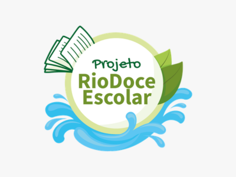

“Ciência delas” no Projeto Rio Doce Escolar
Gestoras, pesquisadoras, professoras e agentes comunitárias da bacia do Rio Doce contam a ciência que fazem na Rede de Educadores Ambientais.
Coordenação
Manuella Villar Amado (Rio Doce Escolar / Ifes Vila Velha / Educimat)
Quando
20/08 · 9h às 12h · quinta-feira